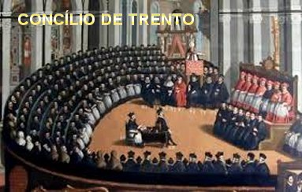
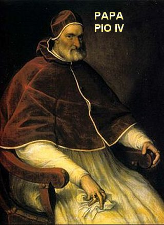
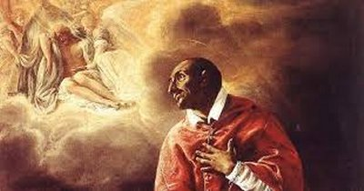
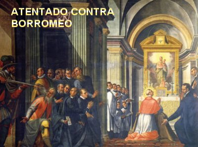
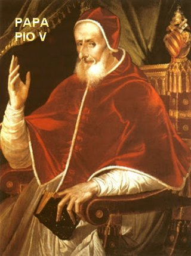
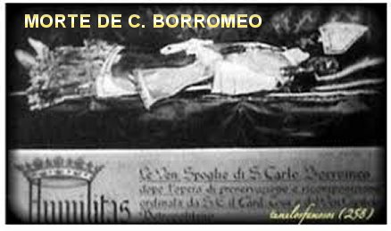
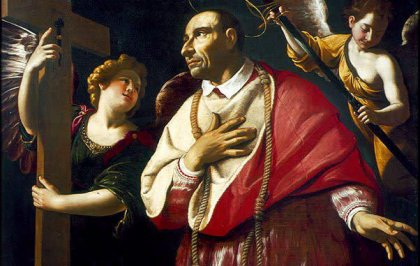

convicção de que aquela imagem impressa com sangue no tecido branco de linho era
mesmo NOSSO SENHOR JESUS CRISTO.
convicção de que aquela imagem impressa com sangue no tecido branco de linho era
mesmo NOSSO SENHOR JESUS CRISTO. CRISTIANISMO VERDADEIRO
CONCILIO DE TRENTO 
Além das muitas qualidades pessoais do sobrinho do Papa, um mérito que não pode deixar de ser reconhecido em Carlos Borromeo é aquele de ter convencido o Papa Pio IV a rearticular o Concilio de Trento que foi suspenso e interrompido em 1555, por falta de entendimento entre os membros conciliares. Era necessário chegar a um acordo sobre todos os temas que foram mencionados e analisados, propiciando que as assembléias funcionassem com normalidade e que finalmente encontrassem as soluções mais adequadas para os problemas levantados, concluindo os trabalhos conciliares gloriosamente e de modo proveitoso para a Igreja. E verdadeiramente o Papa concordou, e Carlos foi o grande inspirador e a mente organizadora que fez o Concílio se recompor e caminhar firme, encontrando soluções para as diversas dificuldades e concluindo de modo brilhante e benéfico.
Em Julho de 1563, no CONCÍLIO DE TRENTO as discussões haviam terminado e preparavam o alinhamento dos textos dos assuntos aprovados. O decreto final do Concílio foi confirmado pelo Sumo Pontífice Papa Pio IV no Consistório do dia 26 de Janeiro de 1564. Durante esta última e delicada fase, Borromeo interveio diretamente defendendo "a causa cristã na visão da Santa Missa, como sendo o verdadeiro e próprio sacrifício de CRISTO repetido em cada celebração", contrastando com a versão protestante, segundo a qual, a Eucaristia (a Santa Missa) seria “apenas uma lembrança” da Última Ceia. Esta absurda versão protestante está contra as próprias palavras de JESUS contidas nas Sagradas Escrituras!
Assim, no sentido de ir edificando o seu ideal cristão, de comum acordo com o Papa, foi ordenado Sacerdote no mês de Julho, e pouco depois sagrado Bispo, pois desejava ser um real Pastor de almas em sua Diocese de Milão. Continuou, entretanto, a usar o titulo de Arcebispo, segundo o documento que recebeu desde o inicio como Secretário de Estado. Na verdade, Carlos só estava aguardando a oportunidade certa para assumir a sua Diocese ou seja, a Arquidiocese. Pois até então, as diversas atividades que realizou e que nelas ainda atuava, por determinação do Papa, não lhe permitiu tomar posse na Arquidiocese de Milão.
Todavia, havia outras questões
importes e urgentes a serem consideradas e estudadas. O Concílio já havia terminado,
mas era necessário garantir que até mesmo o 
MORTE DO PAPA PIO IV
Com a morte do Sumo Pontífice, Carlos articulou as reuniões para a escolha do Novo Pontífice, e em 7 de Janeiro de 1566 foi eleito o novo Papa, Cardeal Michele Ghislieri, que escolheu o nome de Papa Pio V, e que governou a Igreja no período 1566-1572. Era um dominicano plenamente a favor de todas as implementações feitas pelo Concílio de Trento, principalmente a necessária “Reforma” para reorganizar a Igreja e neutralizar a Contra-Reforma de Lutero e Calvino, que muito mal causou ao Cristianismo.
UM PASTOR DE FERRO
Em abril de 1566, retornou a Milão, onde re-iniciou imediatamente o grande trabalho da Reforma, de acordo com o Concílio de Trento. Ele era um organizador brilhante e trabalhador incansável, tanto que Filipe Neri chegou a exclamar: "Mas esse homem é de ferro"!
Organizou a sua Arquidiocese com 12
circunscrições, e supervisionou a revisão da vida das Paróquias, obrigando os Párocos
a manter os registros atualizados, anotando as 
E também fazia outras perguntas semelhantes, mas abrangendo outras questões, procurando ver e entender as coisas de modo concreto em contato direto com o povo. Ele perguntava: “Você está bem em seu trabalho? O que acha da Reforma da Igreja?” Em muitas oportunidades encontrou dificuldades, que com paciência, inteligência e bastante amor conseguiu superar. Entretanto, em algumas reuniões aconteceu desentendimentos, e até ocorreram hostilidades.
IMPORTANTES REALIZAÇÕES NA ARQUIDIOCESE
Durante sua administração como Arcebispo, 1566-1584, dedicou-se com decisão à Arquidiocese de Milão, restaurando e promovendo as Igrejas, começando pelos Santuários Addolorata em Rho, o Santuário de NOSSA SENHORA DOS MILAGRES em Corbetta, o Sacro Monte de Varese, e também a San Fedele em Milão e a Igreja da PURIFICAÇÃO DA VIRGEM MARIA em Traffiume. Cuidou de elaborar normas importantes para a renovação dos costumes eclesiásticos, visitou incansavelmente todas as obras, com um trabalho pastoral meticuloso e também, não se esqueceu de visitar as aldeias mais remotas de sua Arquidiocese, e de fazer crescer a educação dos leigos com a fundação de escolas e faculdades (Brera, que foi confiada aos Jesuítas, e também ao Borromeo Pavia). Entre as grandes e importantes providências foi de obrigar os párocos das diversas Paróquias Milanesas a manter os registros atualizados, com as datas e especificações sobre os batizados, casamentos e óbitos dos fiéis. Na realidade, este procedimento foi um dos primeiros passos no mundo, numa tentativa de através dele, dos registros familiares, estabelecer os ancestrais diretos contidos nos modernos registros.
EMBOSCADA CONTRA O ARCEBISPO

A TERRÍVEL PRAGA DE PESTE NEGRA EM MILÃO
Ele sempre foi um homem
que cumpriu com fervor e amorosamente o trabalho pastoral, atendendo a todos
cordialmente do mesmo modo, tanto os maiores, como os menos favorecidos, com a mesma
atenção e a mesma disponibilidade, se necessário "dando sua vida pelos seus amigos",
e provou isto em diversas oportunidades. Em duas delas
a grandeza do seu amor ao próximo sobressaiu de modo notável: a primeira foi por
ocasião de uma fome muito severa nos anos 1569/70, em que ele dispôs dos próprios
recursos vendendo bens, para ajudar concretamente a amenizar durante aqueles
terríveis meses, a fome das pessoas mais pobres; e a segunda foi num período devastador
de uma abominável e terrível epidemia de “peste”, nos anos 1576-1577. Quando
ela começou, ele estava ausente da cidade numa visita 
Ele imediatamente fez um testamento, pois sabia que a praga não tinha respeito por ninguém, e com urgência organizou o trabalho de assistência, indo pessoalmente aos locais mais infectados e corajosamente visitava todas aquelas pessoas afetadas pela terrível doença, ajudando e providenciando incansavelmente medicamentos e proteções contra o mal, a ponto de merecer uma censura do Papa Pio V, em Roma.
E seu empenho foi tão grande e decisivo, que com os fiéis católicos organizou uma procissão que atravessou diversas ruas da cidade, rezando e cantando fervorosamente. Todos ali estavam unidos numa mesma e amorosa súplica a DEUS, pedindo a NOSSO SENHOR que acalmasse a fúria do mal, e poupasse a vida das pessoas. E na procissão como expressão maior da sua fé e da sua confiança na Providência Divina, caminhou o percurso descalço, rezando, cantando e transportando uma preciosa relíquia de um dos sagrados pregos da Cruz de JESUS, inserido numa pequena madeira especialmente preparada, também em forma de cruz. E de maneira admirável e incrível, do dia para a noite a Graça Divina foi derramada do Céu em profusão, diminuindo visivelmente a epidemia e logo acabando com a peste na cidade. Isso foi interpretado por toda a cristandade e por muitas pessoas até de outras religiões, como sendo uma verdadeira e benéfica intervenção de DEUS.
VISITA DO SANTO SUDÁRIO DE CRISTO
Apesar de toda a sua atividade pastoral, Borromeo fez quatro viagens a Roma e
quatro viagens a Turim. Ele era muito dedicado ao Santo Sudário, porque tinha
a
convicção de que aquela imagem impressa com sangue no tecido branco de linho era
mesmo NOSSO SENHOR JESUS CRISTO.
Em 1578 o Duque Emanuel Felisberto de Sabóia, num comboio especial levou o Santo Sudário para Turim, na Itália, porque sendo amigo do Arcebispo de Milão Carlos Borromeo, quis poupá-lo da penosa penitência que ele queria fazer. O Arcebispo Carlos projetava ir a pé de Milão na Itália até Chambery na França, a fim de visitar na Igreja do Palácio dos Sabóia o Santo Sudário de CRISTO. Borromeo queria agradecer fervorosamente a DEUS a libertação de Milão daquela terrível epidemia de peste, que matou muita gente, inclusive dezenas de Sacerdotes que ajudavam os necessitados. Como a Santa Mortalha estava na França, além da grande distância, era difícil para o Arcebispo atravessar os Alpes naquela época do ano, coberto de gelo pelo inverno, além de ser um trajeto muito perigoso. Então o Duque de Sabóia levou o Santo Sudário para Turim.
De 1578 a 1694 a relíquia sagrada permaneceu guardada na Igreja de São Lourenço em Turim. Em 1694 ela foi transportada numa linda e fervorosa procissão para a Catedral de Turim, sendo colocada numa Capela que foi construída dentro da Catedral especialmente para o Sudário, pelo Arquiteto Guarin. Em 1939, pela eclosão da 2ª Grande Guerra Mundial, por razões de segurança, o Sudário de CRISTO foi levado para a Abadia de Montevergine, em Avellino, ainda na Itália, onde permaneceu oculto. Em 1945, com o final da Grande Guerra, o Sudário voltou para a Catedral de Turim, onde permanece na Capela Especial até hoje.
Com o falecimento do ex-Rei da Itália, Umberto II, que pertencia à família Sabóia e o qual, também era o herdeiro da preciosa relíquia, por testamento deixou a Santa Sindone de JESUS à posse do Papa João Paulo II.
O Papa João Paulo II, na mesma época, doou a relíquia sagrada do Santo Sudário para o Tesouro da Igreja.


MORTE, CANONIZAÇÃO E VENERAÇÃO

Seu culto se espalhou rapidamente, pois em vida já era considerado um Santo. Foi proclamado Abençoado em 1602 e foi Canonizado no dia 1º de Novembro de 1610, pelo Sumo Pontífice Paulo V (1605-1621), que determinou o dia 4 de Novembro para a comemoração anual da sua chegada ao Céu.
O Cardeal Cesar Barone que gostava muito dele, disse: "Ele foi um segundo Ambrósio, cuja morte prematura, era lamentada por todas as pessoas de bom senso, porque infringiu uma grave perda à Igreja".
Seu corpo foi colocado na cripta da Catedral de Milão, onde permanece até hoje, enquanto o seu coração foi simbolicamente preservado na Basílica dos Santos Ambrogio e Carlo al Corso, em Roma, numa pequena área, atrás do altar principal.
ORAÇÃO
Feita por São Carlos Borromeo dirigida ao seu Anjo da Guarda:

“Meu bom Anjo da Guarda, não sei quando e de que modo irei morrer. É possível que eu seja levado de repente ou que, antes do meu último suspiro, eu me veja privado das minhas capacidades mentais. E há tantas coisas que eu quereria dizer a DEUS, no limiar da Eternidade... Por isso hoje, com plena liberdade da minha vontade, venho pedir ao meu querido Anjo da Guarda, que faleis por mim nesse temível momento. Direis, então, ao SENHOR, em meu nome, meu querido Anjo”:
- “Ele quer morrer na Santa Igreja Católica Apostólica Romana, no seio da qual morreram todos os Santos, depois de JESUS CRISTO, porque fora dela não há salvação”.
- “Pede a graça de participar nos méritos infinitos do nosso REDENTOR e quer morrer pousando seus lábios na Cruz, lembrança daquela CRUZ que foi banhada com o Divino e Precioso Sangue de NOSSO SENHOR”.
- “Que permanece triste e aborrecido todas as vezes que pensa nos seus pecados, aos quais detesta arrependido, porque ofenderam a JESUS e que, por amor a ELE, perdoa os seus inimigos, como ele mesmo deseja ser perdoado”.
- “Que aceita a morte como sendo a Vontade de DEUS e que, com toda confiança, se entrega ao amável e SACRATÍSSIMO CORAÇÃO DIVINO, esperando pela misericórdia do SENHOR DEUS”.
- “Que, no seu inexprimível desejo de ir para o Céu, se dispõe a sofrer tudo quanto a Soberana Justiça Divina determinar por bem infligir a sua alma”.
“Não recuseis, ó meu Santo e Querido Anjo da Guarda, ser o meu intérprete junto ao Adorado, Amado e Maravilhoso DEUS DA VIDA, expondo diante DELE estes meus sentimentos e a minha sincera vontade”. “Amém”.